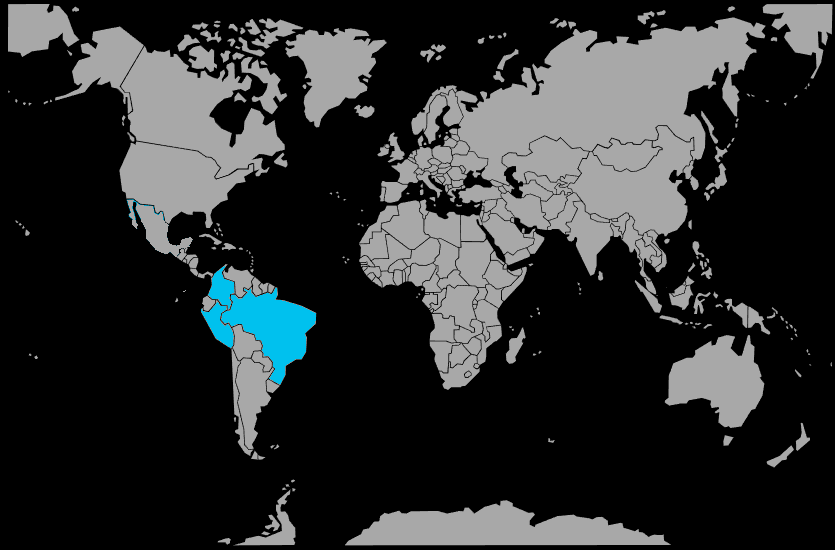

Systématique
- Ordre : Cichliformes
- Famille : Cichlidae
- Sous‑famille : Geophaginae
- Genre : Apistogramma
- Espèce : Apistogramma cacatuoides

Apistogramma cacatuoides est l'un des plus populaires cichlidés nains amazoniels, apprécié pour la crête de sa nageoire dorsale évoquant un cacatoès, d'où son nom.
Les mâles atteignent 8 à 9 cm, les femelles 5 à 6 cm, avec des couleurs très variables selon les lignées d'élevage (rouge, jaune, bleu, orange).
L'espèce est territoriale mais accessible, avec des mâles généralement peu agressifs ; elle vit en couple ou en harem dans un bac bien structuré avec de nombreuses cachettes.
Elle apprécie les zones calmes, ombragées, avec des plantes et des racines formant des abris ; elle cohabite volontiers avec des petites espèces paisibles occupant d'autres niveaux.
Mode : pondeur en cavité ; la femelle pond dans une grotte ou sous une racine, qu'elle nettoie au préalable avec soin.
L'espèce est réputée facile à reproduire ; une eau douce, légèrement acide et très propre, avec une filtration douce, favorise les pontes régulières et l'élevage des alevins.
Dimorphisme sexuel : très marqué ; les mâles sont nettement plus grands, avec une crête dorsale très développée et des couleurs beaucoup plus intenses, tandis que les femelles restent petites et jaunes.
Espérance de vie : 5 à 7 ans en aquarium bien tenu, ce qui en fait l'une des plus longévives du genre.
L'espèce occupe les zones calmes, peu profondes et densément végétalisées de petits cours d'eau et de zones inondées amazoniennes, avec un substrat riche en matière organique.
Répartition
Origine naturelle :
- Bassin de l'Amazone au Pérou, en Équateur et au Brésil.
- Affluents des ríos Ucayali, Marañón et autres cours d'eau amazoniens.
- Petits ruisseaux et tributaires forestiers du centre amazonien.
L'espèce est bien distribuée dans les systèmes fluviaux secondaires des régions de Loreto et de zones amazoniennes voisines du Pérou et du Brésil.
Paramètres de maintenance
Température : 24 à 27 °C.
pH : 5,0 à 7,0, eau légèrement acide idéalement.
GH : 1 à 8 °dGH, eau douce à très douce.
Courant : très faible, avec de nombreuses zones calmes et abritées.
Volume conseillé : à partir de 80–100 L pour un couple ou un harem, très bien planté et structuré.
Régime alimentaire
Régime : omnivore à tendance carnivore ; il se nourrit de petits invertébrés, larves d'insectes et détritus du substrat.
En aquarium, il apprécie particulièrement les nourritures vivantes (artémias, daphnies, vers) et accepte facilement les granulés fins de qualité.
Une alimentation variée, distribuée en petites rations régulières, soutient la beauté des couleurs et favorise les reproductions fréquentes.